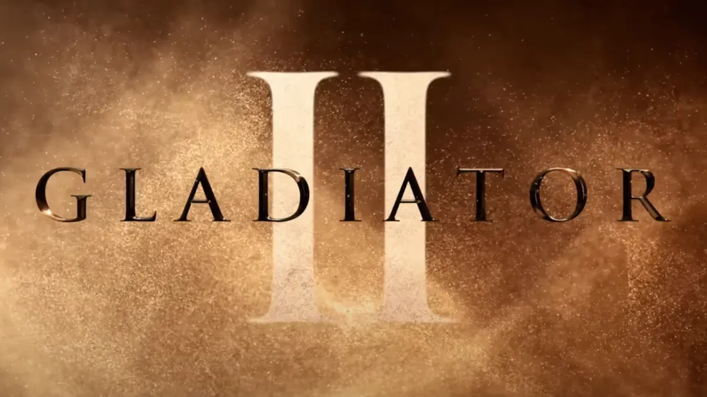

Gladiator II

| Noter: ★★★★★ | Envie de voir | Rédiger ma critique |
Synopsis
Interdit - 12 ans
Des années après avoir assisté à la mort du héros vénéré Maximus aux mains de son oncle, Lucius est forcé d'entrer dans le Colisée lorsque son pays est conquis par les empereurs tyranniques qui gouvernent désormais Rome d'une main de fer. La rage au cœur et l'avenir de l'Empire en jeu, Lucius doit se tourner vers son passé pour trouver la force et l'honneur de rendre la gloire de Rome à son peuple.